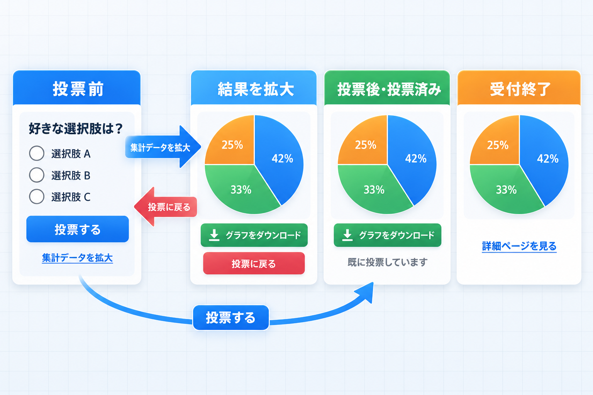
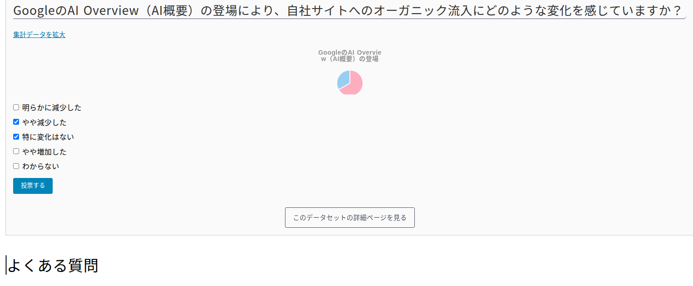
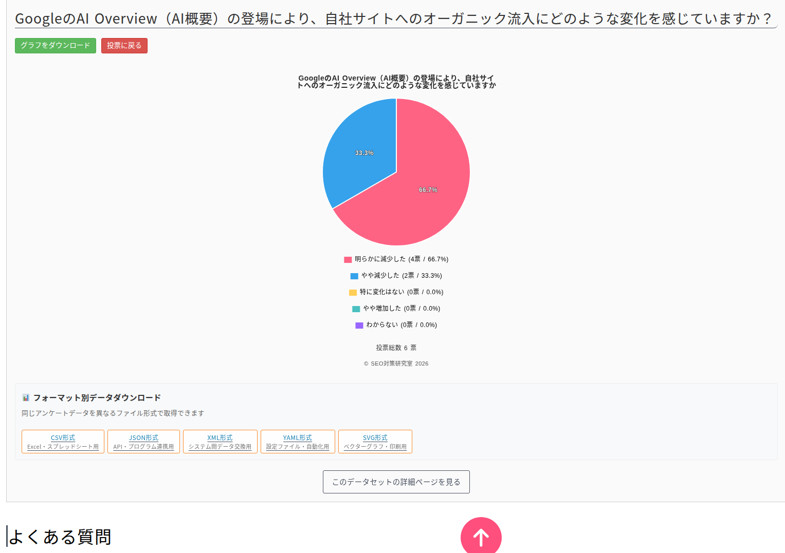
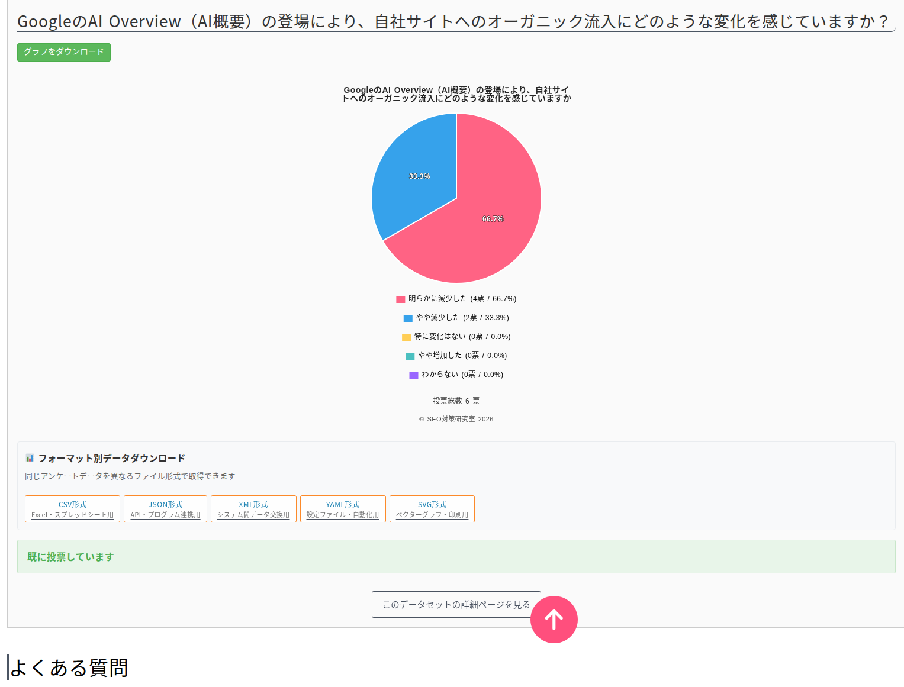
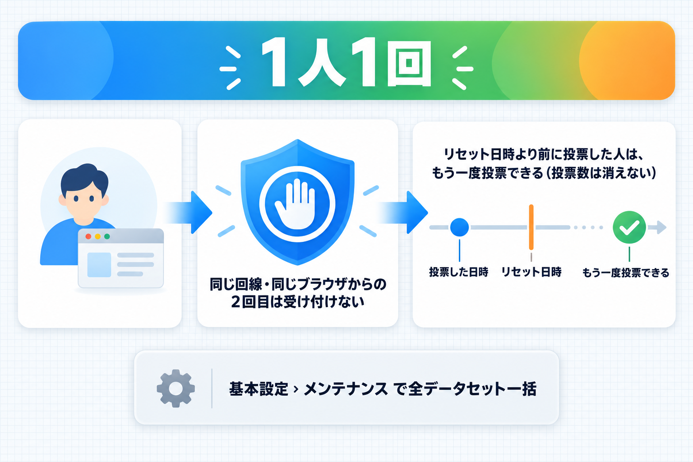

記事での表示と投票
ショートコードを貼った記事に表示される投票ブロックの説明です。来訪者から見た画面は「投票前」「結果を拡大」「投票後・投票済み」「受付終了」の4つの状態があり、状態に応じて表示が自動で切り替わります。

状態の一覧
| 状態 | 表示されるとき | 表示内容 |
|---|---|---|
| 投票前 | 受付中で、まだ投票していない | 設問、「集計データを拡大」、小さなグラフ、選択肢、「投票する」、詳細ページへのリンク |
| 結果を拡大 | 投票前に「集計データを拡大」を押した | 大きなグラフ、「グラフをダウンロード」「投票に戻る」、形式別のダウンロード、詳細ページへのリンク |
| 投票後・投票済み | 投票した直後、またはすでに投票している | 大きなグラフ、「グラフをダウンロード」、形式別のダウンロード、「既に投票しています」（すでに投票済みでページを開いたとき）または「投票しました。」（投票した直後）、詳細ページへのリンク |
| 受付終了 | 受付を締め切っている（投票したかどうかに関係なく優先） | 大きなグラフと詳細ページへのリンクだけ |
| データが見つかりません。 | データセットが無い・公開されていない | この文だけ |
| 選択肢がありません。 | 選択肢が1つも保存されていない | この文だけ |
投票前
| 要素 | 説明 |
|---|---|
| 設問 | データセットのタイトル。見出しの大きさは編集画面の「質問文の見出し」（既定 h3） |
| 集計データを拡大 | 押すと選択肢を隠し、大きなグラフを表示します。まだ1票も無いときは表示されません |
| 小さなグラフ | いまの集計を小さく見せるプレビュー。まだ1票も無いときは表示されません |
| 選択肢 | 複数選択はチェックボックス、単一選択は丸いボタン |
| 投票する | 選んだ選択肢で投票します。送信中は「投票中...」に変わり、押せなくなります |
| このデータセットの詳細ページを見る | データセットの詳細ページ（/datasets/detail-番号/）を開きます。詳細ページの中に表示されている投票ブロックには出ません |

何も選ばずに「投票する」を押すと
「選択肢を選んでください。」というダイアログが表示され、投票は送られません。
結果を拡大

- グラフをダウンロード: グラフを PNG 画像として保存します（グラフとダウンロード）。
- 投票に戻る: 拡大表示を閉じて、選択肢と「投票する」に戻ります。まだ投票していないときだけ表示されます。
- フォーマット別データダウンロード: CSV・JSON・XML・YAML・SVG の各形式のページを新しいタブで開きます。
投票後・投票済み
投票すると選択肢が消え、「投票しました。」と表示されて大きなグラフに切り替わります。グラフは投票した票を含む最新の集計です。その後ページを開き直すと、「既に投票しています」と表示されます。

受付終了
受付を締め切っている間は、グラフと「このデータセットの詳細ページを見る」だけを表示します。「受付は終了しました」のような文言は表示しません。まだ1票も無いときは、グラフの代わりに「まだ投票がありません。」と表示されます。

締め切りの操作は 投票の受付と締め切り を参照してください。
1人1回の制限
同じ人が何度も投票できないよう、次のどちらかに当てはまると「投票済み」とみなします。

- 同じ接続元（IP アドレス）から、すでに投票している。
- 同じブラウザに、投票した記録（有効期限1年）が残っている。
ただし、「リセット日時」より前の投票は数えません。リセット日時は、基本設定の「全データセットの投票制限を解除」を押した日時と、そのデータセットで「集計データを全削除する」を押した日時の新しい方です。
| よくある場面 | どうなるか |
|---|---|
| 会社・学校・家庭など、同じ回線を複数人で使っている | 2人目以降は「既に投票しています」になります |
| ブラウザの履歴（Cookie）を消した | 接続元が同じなら投票できません |
| スマートフォンでモバイル回線に切り替えた | 同じブラウザに記録が残っていれば投票できません |
| 管理画面で投票数を0に書き換えた | 投票済みの判定は変わりません |
| 基本設定で「全データセットの投票制限を解除」を押した | それより前に投票した人は、すべてのデータセットで再び投票できます |
CDN やプロキシを使っているサイト
CDN やリバースプロキシを通していると、すべての来訪者が同じ接続元に見え、最初の1人しか投票できないことがあります。この場合は、サイトの設定ファイルで「プロキシを信頼する」設定を有効にする必要があります。設定はサーバーの構成によって異なるため、サイトを管理している技術担当者に相談してください。
判定のタイミング
判定はページを開いたときと、投票を送ったときの両方で行います。ページがキャッシュされていて投票フォームが表示されていても、送信したときに投票済みと分かれば「既に投票しています」と表示されます。
単一選択と複数選択
| 項目 | 単一選択 | 複数選択 |
|---|---|---|
| 選択肢の部品 | 丸いボタン（1つだけ） | チェックボックス（いくつでも） |
| 票の数え方 | 選んだ1つに1票 | 選んだそれぞれに1票 |
| 総投票数 | 通常は投票した人数と同じ（投票数を手で直した場合などは一致しません） | 延べ票数（人数より多くなる）。割合も延べ票数に対する割合 |
来訪者に表示されるメッセージ
| メッセージ | 出るとき | 対処（サイト管理者向け） |
|---|---|---|
| 選択肢を選んでください。 | 何も選ばずに「投票する」を押した | — |
| 投票しました。 | 投票に成功した | — |
| 既に投票しています | 同じ人が2回目の投票をした、または投票済みでページを開いた | 1人1回の制限による正常な表示です |
| 不正なリクエストです。（nonce） | ページのキャッシュが古く、投票の確認が通らなかった | キャッシュを消す、投票ページをキャッシュの対象から外す（トラブルシューティング） |
| セキュリティトークンが見つかりません。ページを再読み込みしてください。 | ページの一部が欠けて投票の確認ができない | ページを再読み込みする。続くときはキャッシュや最適化の設定を確認 |
| データが見つかりません。 | データセットが無い・公開されていない | データセットを公開する。ショートコードの番号を確認する |
| 選択肢がありません。 | 選択肢が保存されていない | 編集画面で選択肢を入力して保存する |
| 選択肢が選ばれていません。 | 選択が無いまま送信された | ページを再読み込みしてから投票する |
| この設問では1つだけ選択できます。 | 単一選択なのに2つ以上が送られた（古いページから投票した場合など） | ページを再読み込みしてから投票する |
| 選択肢が変更されました。ページを再読み込みしてから投票してください。 | ページを開いた後に、選択肢が並べ替え・追加・削除された（別の選択肢に票が入らないよう受け付けません） | ページを再読み込みしてから投票する。ページのキャッシュを削除する |
| 無効な選択肢です。 | 存在しない選択肢が送られた | ページを再読み込みしてから投票する |
| 投票を記録できませんでした。時間をおいてもう一度お試しください。 | サーバー側で投票の保存に失敗した（票は数えられていません） | 時間をおいてもう一度投票する。続くときはサーバーの状態を確認する |
| 混み合っています。少し待ってからもう一度お試しください。 | 同じ投票に多くの投票が同時に集中し、順番待ちが長くなった | 少し待ってからもう一度投票する |
| 投票に失敗しました。 | サーバーが理由を返さずに失敗した | 時間をおいて再度試す |
| 投票処理中にエラーが発生しました。 | 通信エラーなど | 通信環境を確認して再度試す |
| まだ投票がありません。 | 1票も無い状態でグラフを表示しようとした | — |
| 結果データの取得または形式に問題がありました。／結果の取得中にエラーが発生しました。 | グラフ用の集計を読み込めなかった | ページを再読み込みする |
グラフの部分に赤字で表示されるメッセージは グラフとダウンロード にまとめています。